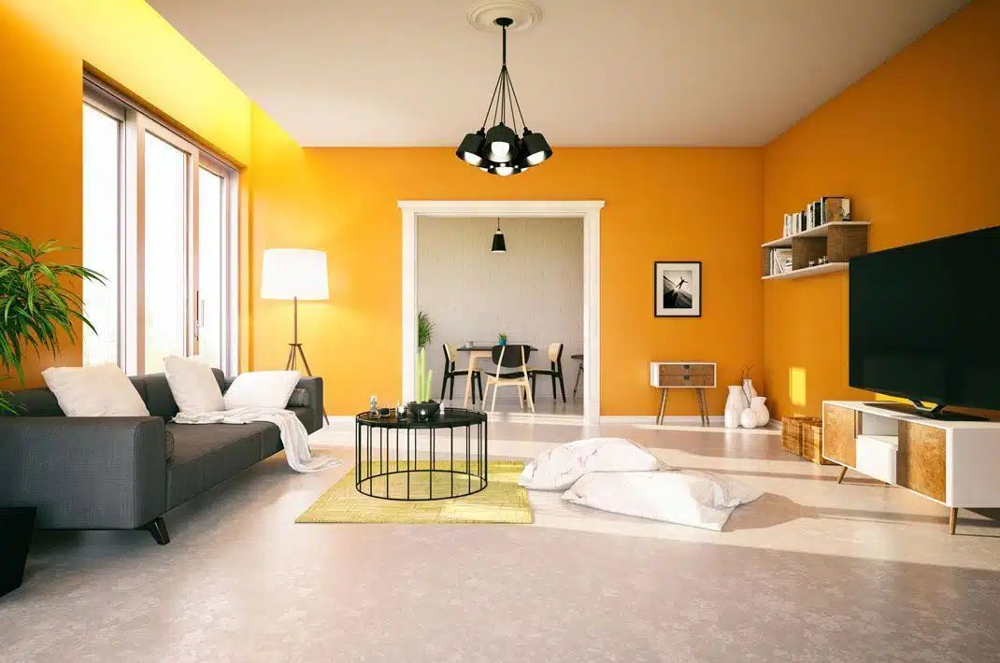
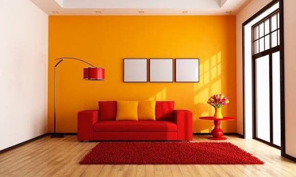
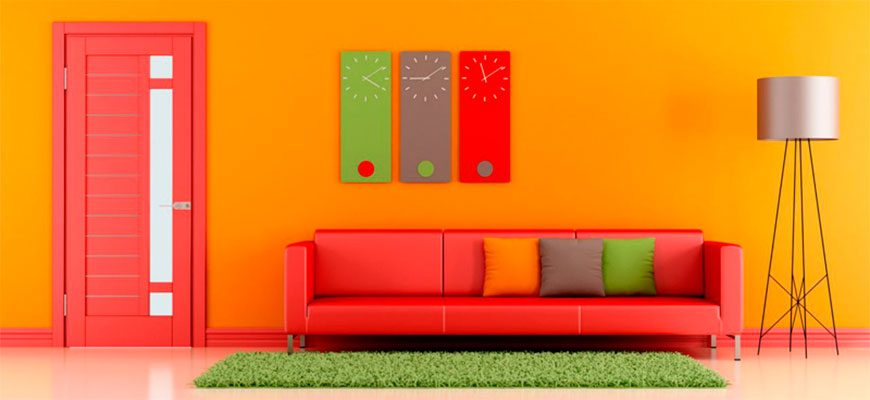
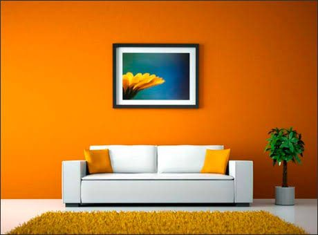
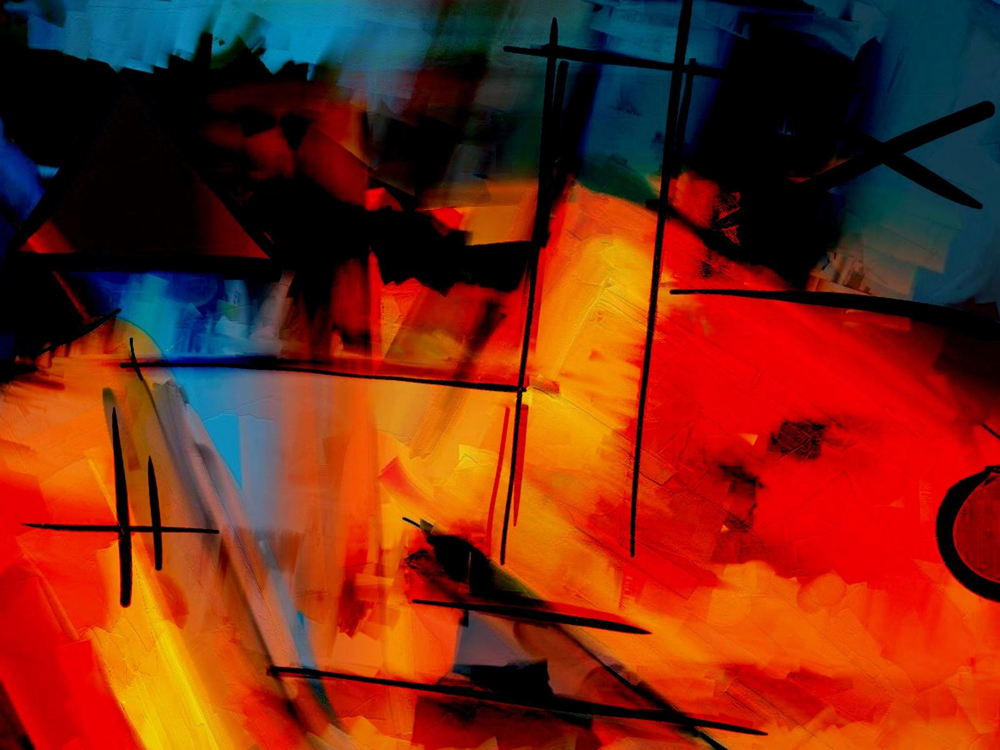

Pintura Decoración de interiores Acabados de estudio
Paredes que cambian por completo un espacio
Combinamos color, textura y oficio para transformar tu casa o tu negocio con acabados que parecen hechos a mano, porque lo están.
Desliza
Pintura Decoración de interiores Acabados de estudio
Combinamos color, textura y oficio para transformar tu casa o tu negocio con acabados que parecen hechos a mano, porque lo están.
DeslizaNuestro estudio
Somos un estudio de pintura y decoración de interiores dedicado a los acabados que marcan la diferencia: texturas, veladuras, esmaltes y color, aplicados con la precisión de quien trata cada muro como una pieza única. No solo pintamos: diseñamos el ambiente completo contigo, desde la primera visita hasta el último detalle.

Una pared no es solo color: es lo que sientes al entrar.Hablemos de tu espacio →
Qué hacemos
Todo lo que tu espacio necesita para cambiar por completo, en un mismo estudio.
Color y acabado impecable para salas, habitaciones y espacios comerciales.
Protección y estética para fachadas, resistente al tiempo y al clima.
Estuco, esponjado, veladuras y efectos metálicos hechos a mano.
Instalación de papel tapiz y revestimientos decorativos a medida.
Te ayudamos a elegir la paleta perfecta según la luz, el uso y el estilo del espacio.
Reparación y preparación profesional de muros antes de pintar.
Nuestro trabajo
De un neutro plano a mostaza cálido, acabado mate.
De blanco estándar a terracota, con textura esponjada.
De beige neutro a rojo óxido, acabado aterciopelado.
De gris frío a ocre dorado, acabado satinado.
Inspiración



Cómo trabajamos
Simple, claro y sin sorpresas, de principio a fin.
Conocemos tu espacio y lo que quieres lograr.
Elegimos juntos la paleta y la textura ideal.
Nuestro equipo aplica el acabado con precisión de estudio.
Revisamos cada detalle contigo antes de irnos.
Lo que dicen
★★★★★
“[Escribe aquí la opinión de un cliente real sobre su experiencia con Estudio Matiz]”
★★★★★
“[Espacio para contar cómo fue la experiencia de otro cliente satisfecho]”
★★★★★
“[Reserva este espacio para una reseña real, con el nombre y la ciudad de tu cliente]”
Hablemos de tu proyecto
Cuéntanos qué espacio quieres transformar y te contactamos con una propuesta a tu medida.